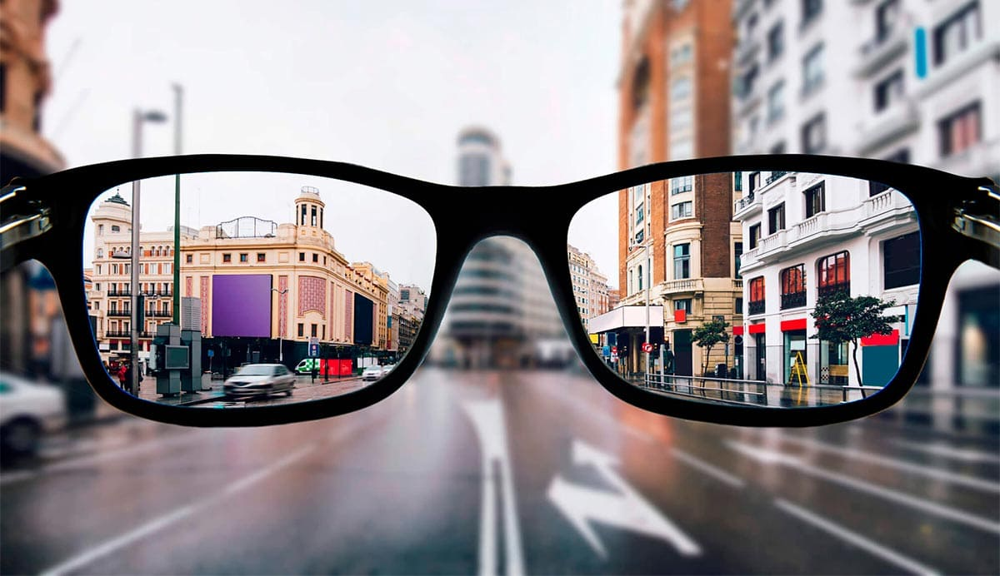

Bagaimana memulihkan kembali penglihatan mata tanpa operasi
 14713
14713 5
5 14713
14713
Jika Anda berpikir kerusakan pada penglihatan adalah proses yang tidak dapat diubah, saya akan meyakinkan Anda sekarang! Faktanya, kita tidak hanya dapat memperlambat proses ini, tetapi juga membalikkan situasi sepenuhnya. Saya mengerti apa yang saya katakan, karena saya sendiri berjuang untuk mendapatkan kembali penglihatan saya, karena saya hampir kehilangan penglihatan saya! Sekarang saya dapat dengan bebas melihat tanpa kacamata dan saya ingin berbagi dengan Anda rahasia pemulihan penglihatan saya.
Bagaimana semuanya dimulai
Penglihatanku selalu bagus, tapi suatu hari semuanya berubah. Mula-mula muncul titik hitam kecil di sudut mata. Lama kelamaan membuat saya tidak nyaman, tetapi kemudian saya mulai memperhatikan bahwa penglihatan saya memburuk dan saya segera pergi ke dokter.
Dokter mata menjelaskan kepada saya bahwa apa yang mengaburkan mata saya muncul seiring bertambahnya usia saya dan biasanya tidak menimbulkan ancaman tertentu. Namun seringkali tidak tidak dapat diobati. Dalam kasus saya, miopia semakin berkembang. Saat itulah penglihatan menurun lebih dari 1D (diopter) per tahun. Baru enam bulan lalu saya merasakan gejala miopia pada penglihatan saya, tetapi terakhir kali sudah hampir mendekati 4 diopter!
Saya panik, karena setiap hari penglihatan saya semakin buruk. Setiap hari saya mengonsumsi banyak vitamin, melakukan latihan mata khusus, dan mencoba membatasi jumlah waktu yang saya habiskan di depan layar. Tapi sepertinya tidak membantu saya sama sekali ...
Mengapa saya takut dioperasi
Sepertinya operasi mata adalah jalan satu-satunya! Tetapi ini jugalah satu-satunya hal adalah yang paling mahal dan tidak selalu efektif. Saya mengetahui banyak kasus kebutaan setelah operasi. Mereka tidak hanya tidak menjamin Anda, tetapi juga memungkinkan Anda untuk menandatangani formulir, jika terjadi kambuh atau kehilangan penglihatan sama sekali - dokter tidak akan bertanggung jawab. Mengerikan, bukan? Ini adalah mata saya! Kalau tidak berhasil, maka penglihatan saya mungkin tidak dapat kembali lagi.
Tetapi saya tahu bahwa saya harus cepat dan segera melakukan sesuatu untuk mata saya, karena penglihatan saya berubah dari -4 menjadi -10! Saya tidak bisa membedakan penampilan seseorang atau benda tanpa kacamata. Jika terus berlanjut, dalam beberapa tahun saya akan buta. Apa yang harus saya lakukan? Hidup dengan anjing pemandu?
Pengobatan alternatif
Pada setiap pemeriksaan, saya menangis dan memohon bantuan, bukan untuk mengukur kacamata baru, yang memperburuk keadaan. Semua dokter mata terus-menerus mengulangi operasi dan menakut-nakuti saya tentang pelepasan retinal. Kemudian saya menyadari bahwa saya tidak dapat mengandalkan siapa pun kecuali diri saya sendiri.
Apa yang saya lakukan: latihan yang berbeda untuk mata, memakai kacamata latihan khusus, minum vitamin, mencoba obat topikal dan obat tetes mata.
Apakah ada metode yang efektif? – Tidak! Latihan yang menyebabkan sakit mata parah atau peningkatan tekanan intraokular. Jangan kaget, saya telah mencoba metode dan latihan yang berbeda. Dan kemudian saya mengetahui bahwa metode Bates yang terkenal tidak hanya tidak terbukti, tetapi juga dapat menyebabkan retinal pecah ..
Alat latihan tidak efektif. Kacamata berlubang tidak memberikan efek apa pun, dan perangkat pijat khusus menyebabkan sakit kepala hebat.
Tetes dan topikal hanya dapat mencegah mata mengering, tetapi tidak dapat memulihkan penglihatan. Tapi saya tidak pernah kehilangan harapan dan Tuhan mendengar doa saya. Dalam sebuah artikel yang terbukti secara medis, saya membaca sebuah wawancara dengan seorang doktor sains yang berbicara tentang obat baru untuk memulihkan penglihatan. Ini bukan hanya vitamin biasa, tetapi juga penemuan serius oleh para ilmuwan – Eyelab.
Singkatnya, dalam kapsul Eyelab. yang mengandung lemak ikan hiu, yang meningkatkan otot mata, maltodekstrin mengembalikan penglihatan dan kontras, tiga bantalan kasa membantu mengurangi kerusakan pada retina dan membantu memulihkan penglihatan. Eyelab. menormalkan otot mata dan menstimulasi saraf yang bertanggung jawab untuk penglihatan dalam waktu sesingkat mungkin.
Saya segera membeli obat ini. Dan saya juga mendapat diskon saat memesan. Apa lagi yang bisa saya katakan ... Obat ini tidak sama dengan yang saya coba sebelumnya. Bagaimana saya memahaminya? - sangat sederhana! Penglihatan saya berangsur-angsur kembali normal dan bahkan semakin membaik.
Bagaimana penglihatan saya kembali
Tentu saja saya meragukan keefektifan obat tersebut. Keraguan tidak mungkin karena saya telah mencoba banyak hal. Tapi, yang mengejutkan, saat pertama kali digunakan, rasa mata kering itu hilang. Dulu, hanya obat tetes mata yang efektif, tetapi hampir perlu diberikan setiap jam. Dan keesokan harinya tekanan intraokular kembali normal. Dan kapiler berhenti pecah. Seminggu kemudian semua pembuluh darah kembali normal dan mata saya akhirnya berhenti sakit dan tidak lagi merah.
Setelah minggu kedua dan ketiga mengonsumsi obat, setiap hari saya melihat perubahan menjadi lebih baik. Objek yang jauh tidak lagi buram seperti sebelumnya. Saya terus melatih mata saya dan menyadari bahwa Eyelab. benar-benar berhasil.
Di akhir perawatan saya ke dokter mata untuk pemeriksaan. Ketajaman visual dari -10 dipulihkan ke -5! Hasil setelah hanya sebulan! Bukankah ini keajaiban? Dan saya tidak berhenti pada apa yang saya dapatkan, tetapi terus menggunakan Eyelab.. Dan apa yang kamu pikirkan? Saya benar-benar memulihkan penglihatan saya. Selama setengah tahun saya telah bepergian tanpa kacamata dan tidak ada perasaan tidak nyaman sama sekali. Bahkan titik hitam di sudut matanya menghilang. Sekarang saya bisa melihat dengan jelas dan nyaman, dan yang terpenting, tidak perlu operasi!

Terakhir, saya ingin mengatakan kepada semua orang yang putus asa: jangan berkecil hati, di zaman ini karena segalanya adalah mungkin! Dan jika Anda membaca baris-baris ini dengan ketegangan, maka Anda harus tahu - semuanya bisa berubah. Ikuti teladan saya dan dunia Anda pasti akan berkilau dengan warna-warna baru, jelas dan cerah.
Perhatian! Pembaca kami memiliki kesempatan eksklusif untuk memesan Eyelab dengan diskon sampai 50%! Tekan tombol SPIN untuk spin roda keberuntungan. Tunggulah hingga roda berhenti. Cobalah keberuntunganmu! Semoga berhasil!